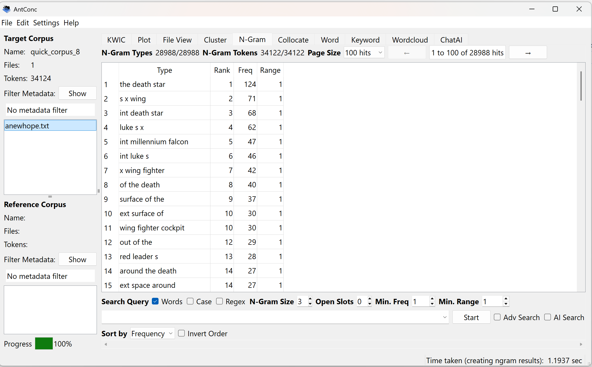
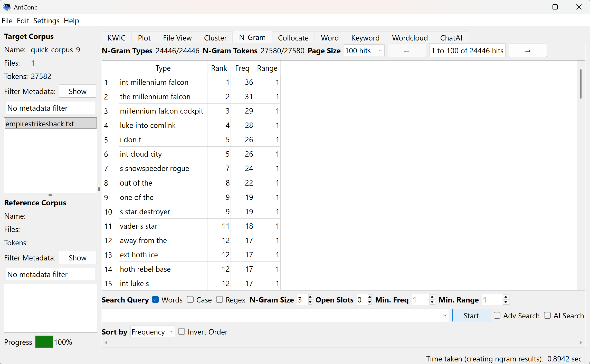
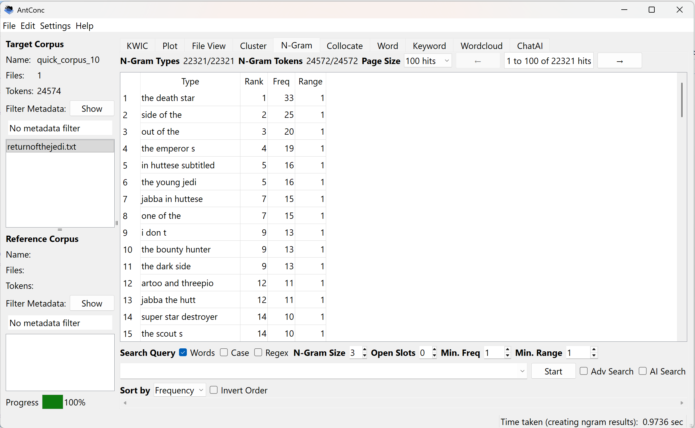
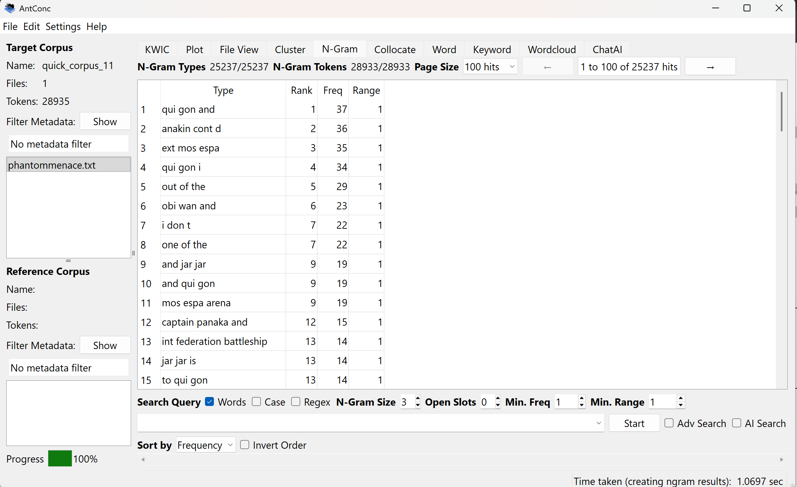
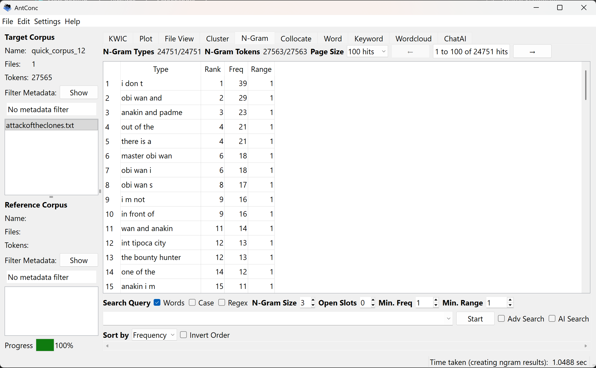
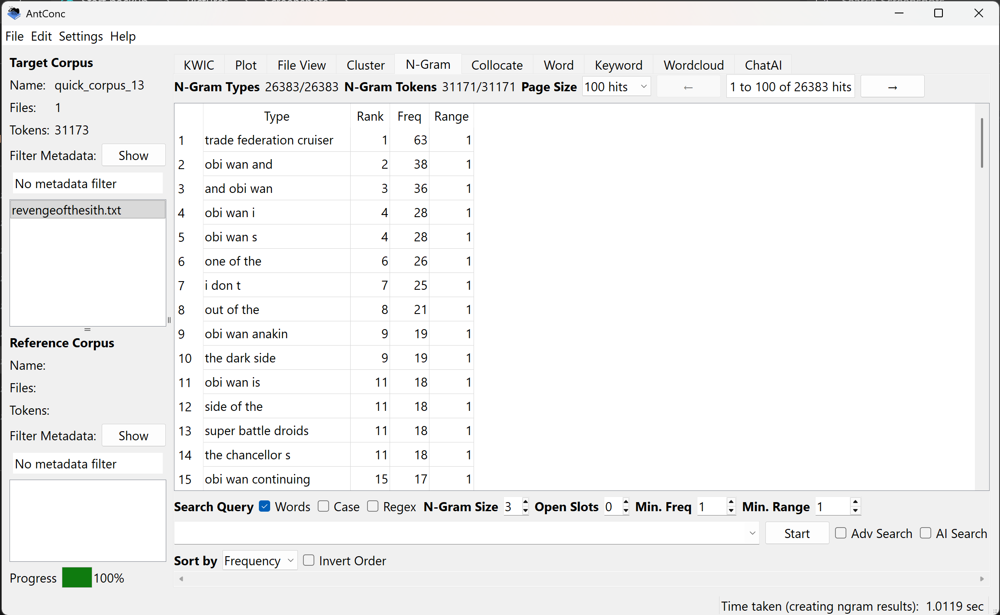

Star Wars is one of the biggest and most successful franchises ever made. With the Original trilogy that started back in 1977 and ending in 1983. These three movies were so massive that there had to be more to come. So in 1999 they started the prequel trilogy. I wanted to see what sort of similarities and differences you can find in these two triogies. Did George Lucas ever change how he wrote?
To begin comparing the two I put all six of the scripts into a program called AntConc. Then I put them under an N-Gram which takes a look at how many times a specific set of words are used. I set them all to a 3 N-Gram.





